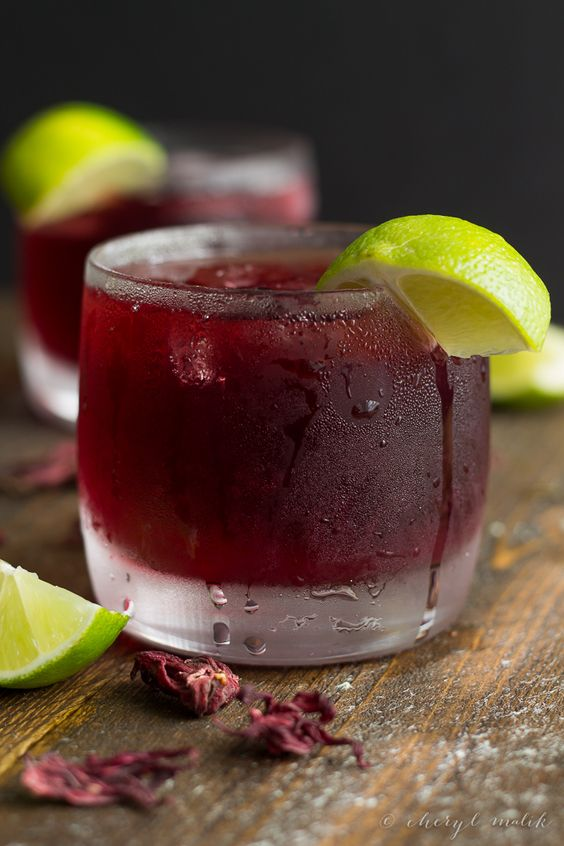

Sobolo

Description
Sobolo is a Ghanaian beverage made from bissap leaves. It's best served cold and can be enjoyed at any time of the day
Ingredients
- 2 cups Hibiscus leaves
- 1 medium-sized riped Pineapple
- 2 tbsp Pineapple syrup
- 1/2 cup sugar
- Ginger
- 3 grains grainsof Hwentia
- 1 piece prekese
Steps
- In a large saucepan, pour in Hisbicus leaves and add water to cover up leaves.
- Under high heat, put Hisbicus leaves on fire.
- Wash and peel pineapples and ginger.
- Add the pineapple peels and hwentia to Hisbicus leaves. Allow it to boil for 10-15 mins(Until water changes color)
- Using a sieve or colander, drain and separate the drink from the cooked leaves and peels.
- Blend pineapple and ginger until smooth. Pour into the sobolo drink and stir
- Allow the drink to cool down completely before you add your sugar and pineapple syrup(if preferred)
- Store in fridge before use or add ice to sobolo drink.
- Enjoy!